Übungen zur Messtechnik#
05 Oktober - Das Schwerependel
Grundlagen für das Praktikum und Fehlerfortpflanzung.

11 Oktober - Dichtemessung einer Flüssigkeit
Die Dichte eines flüssigen Mediums kann unter Ausnutzung des Archimedischen Prinzips ermittelt werden. Hiernach taucht ein Körper so weit in eine Flüssigkeit ein, bis die Gewichtskraft der verdrängten Flüssigkeit der Gewichtskraft des eingetauchten Körpers entspricht. Je kleiner also die Dichte der zu untersuchenden Flüssigkeit ist, desto tiefer wird ein schwimmender Prüfkörper in diese eintauchen.

11 Oktober - Stichprobe Qualitätssicherung
In einer Produktion sollen Spiralfedern mit einer Federkonstsanten \(k_F = (2{,}2 \pm 0{2})\,\mathrm{N/mm}\) (Garantiefehlergrenze) hergestellt werden. Die Qualitätssicherung erfolgt durch eine Stichprobenprüfung an 10 zufällig ausgewählten Federn. Die Federkonstante \(k\) wird aus der Kraft \(F\) und der relativen Wegänderung \(\Delta l\) wie folgt berechnet

11 Oktober - Widerstandsmessung
Für eine Qualitätskontrolle eines Automobilzulieferers werden 3 Stichproben aus einer Lieferung entnommen und in drei Gruppen A, B, C mit jeweils 12 Widerständen eingeteilt. Komponete A hat einen
18 Oktober - Dampfdruckthermometer
Mit dem Dampfdruckthermometer kann die Temperatur aus dem Dampfdruck einer Flüssigkeit bestimmt werden. Die Flüssigkeit wird mit der Messstelle in einen thermischen Kontakt gebracht. Der Dampfdruck nimmt mit der Temperatur der Flüssigkeit beschleunigt zu und kann durch folgende Exponentialfunktion beschrieben werden:
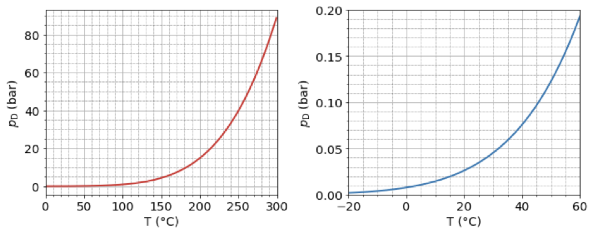18 Oktober - Systematische Messabweichung
Zwei unbekannte Widerstände \(R\) im \(\mathrm{k\Omega}\)-Bereich werden mit zwei Messschaltungen bestimmt:
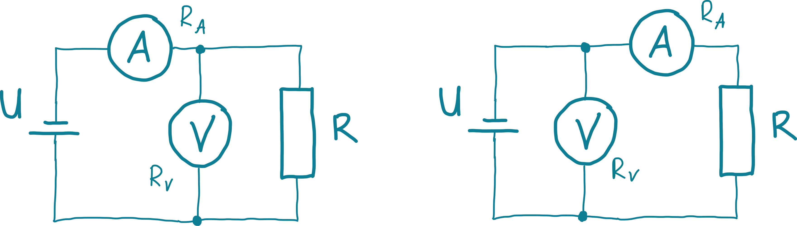18 Oktober - WarmUp - Einheiten umrechnen
Formen Sie folgende Werte/Einheiten um:
25 Oktober - Dampfdruckthermometer Least-Square-Verfahren
Mit dem Dampfdruckthermometer kann die Temperatur aus dem Dampfdruck einer Flüssigkeit bestimmt werden. Die Flüssigkeit wird mit der Messstelle in einen thermischen Kontakt gebracht. Der Dampfdruck nimmt mit der Temperatur der Flüssigkeit beschleunigt zu und kann durch folgende Exponentialfunktion beschrieben werden:
25 Oktober - Hall-Konstante: Lineare Regression
Um die Hall-Konstante \(A_\mathrm H\) eines neuen Werkstoffs zu bestimmen haben Sie eine Messreihe durchgeführt, bei welcher in bestimmten Arbeitspunkten jeweils Strom und Spannung an einem Hall-Element gemessen wurden. Unter Berücksichtigung der relevanten Konstanten – magnetische Flussdichte und Dicke des Hall-Elements – erhalten Sie die in nachfolgender Tabelle zusammengefassten \(x-y\)-Wertepaare:
01 November - Fourier-Transformation Rechteck
Gegeben ist die folgenden Zeitfunktionen \(x(t)\):
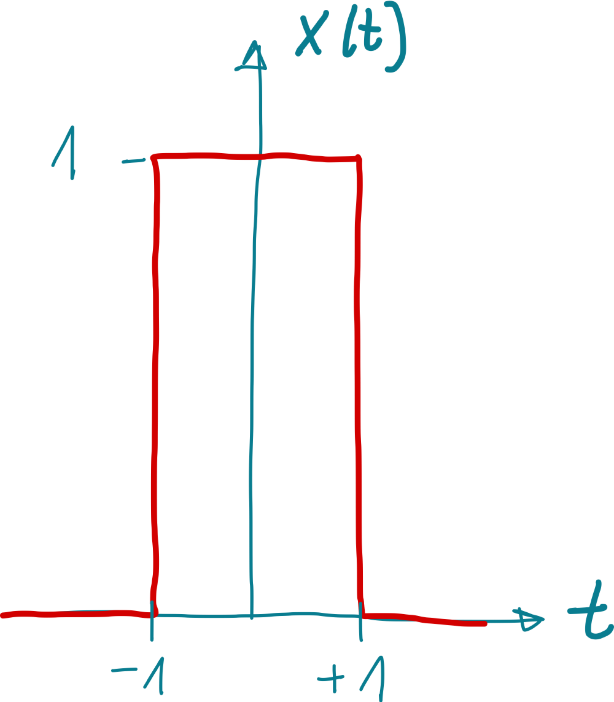01 November - Fourierreihe einer Dreieck-Schwingung
Bestimmen Sie die komplexe und die reelle Fourier-Reihe für die gegebene Dreieck-Schwingung. Wie lauten die Koeffizienten für \(k = 1,2,3,4,5\)? Skizzieren Sie das Betragsspektrum.
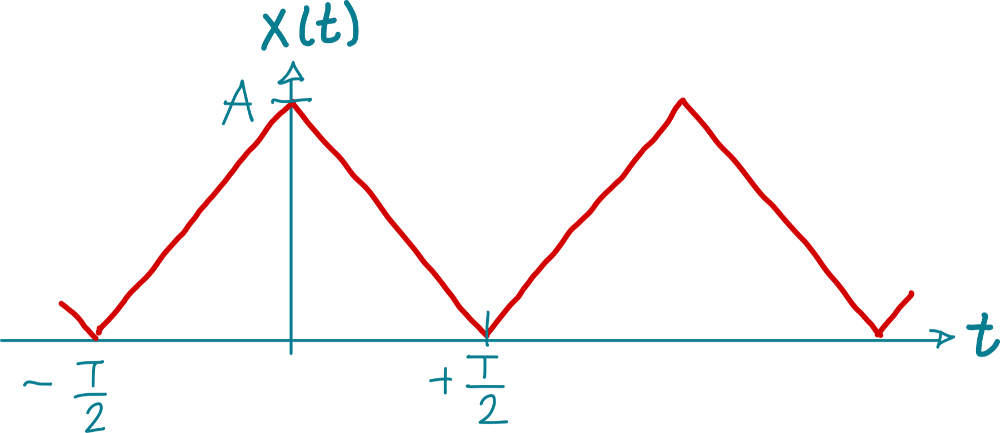01 November - Fourierreihe einer Sägezahn-Spannung
Bestimmen Sie die komplexe und die reelle Fourier-Reihe für die gegebene Sägezahn-Spannung. Wie lauten die Koeffizienten für \(k = 1,2,3,4,5\)? Skizzieren Sie das Betragsspektrum.
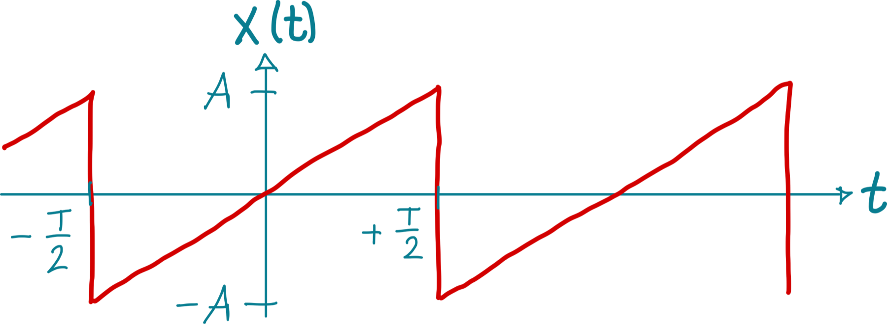01 November - Fourierreihe eines Rechteckpulses
Bestimmen Sie die komplexe und die reelle Fourier-Reihe für die gegebene Sägezahn-Spannung. Wie lauten die Koeffizienten für \(k = 1,2,3,4,5\)? Skizzieren Sie das Betragsspektrum.

08 November - Einweg-Gleichrichter
Gegeben sei eine sinusförmige Spannung \(u(t)\) mit einer Amplitude von \(5\,\mathrm V\) und der Periode \(T\). Skizzieren Sie den Kurvenverlauf der Spannung bei einer Einweg-Gleichrichtung und berechnen Sie den Einweg-Gleichrichtwert. Der quadratische Mittelwert der Wechselspannung wird gemessen, welcher Wert ergibt sich hier? Welche Werte folgen für Scheitel- und Formfaktor?
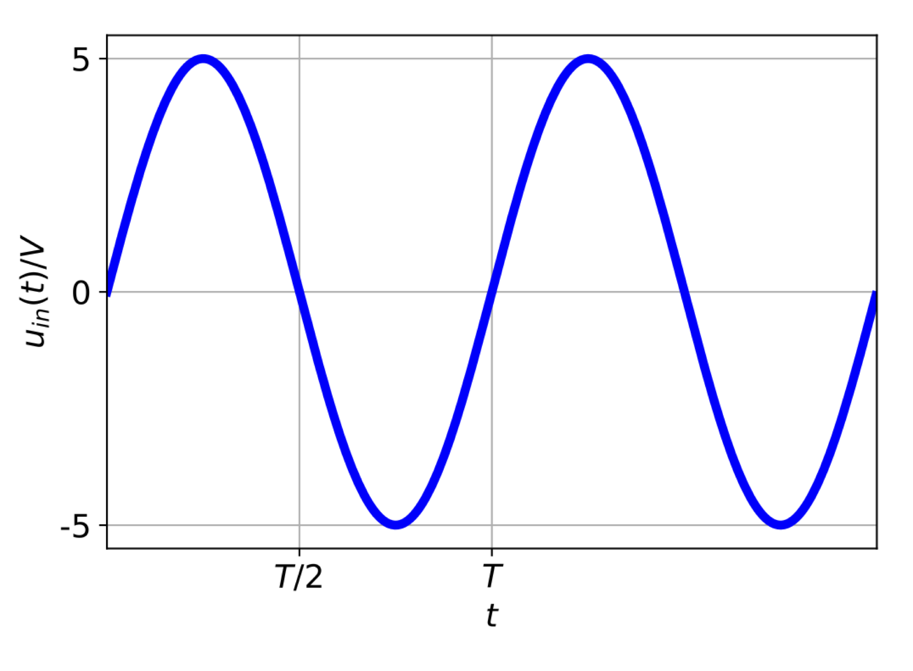08 November - Phasenanschnittsteuerung
An einem Widerstand wird die umzusetzende Leistung mit einem Thyristorsteller, der eine Phasenschnittsteuerung realisiert, eingestellt. Gegeben sind die sinusförmige Wechselspannung mit \(U = 230\,\mathrm V\), der Widerstand des Verbrauchers mit \(R=1{,}5\,\mathrm{k\Omega}\) und der Phasenanschnittwinkel \(\phi = 45^\circ\). Ermitteln Sie die im Widerstand \(R\) umgesetzte Leistung.
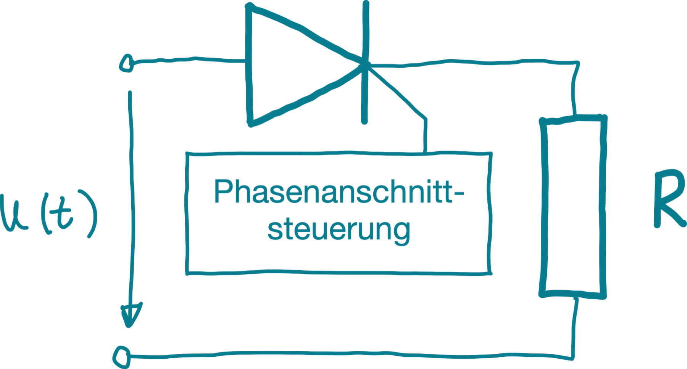08 November - Quantisierungsabweichung infolge der Digitalisierung
Die relative Abweichung infolge der Quantisierung soll kleiner als 0,02% bleiben. Wie groß muss die Auflösung des zu verwendenden AD-Wandlers mindestens sein?
08 November - Stromquelle mit periodischem Rechteckpuls
Eine Stromquelle liefert Ihnen einen periodischen Rechteckpuls laut dem angegebenen Stromzeitdiagramm. Berechnen Sie den arithmetischen Mittelwert \(\overline i\) von \(i(t)\). Welche Leistung wird bei der Messung im Messinstrument mit einem Innenwiderstand von \(R_i = 0{,}3\,\Omega\) umgesetzt?
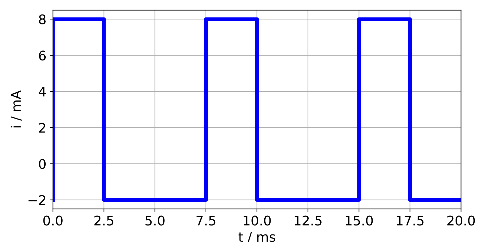22 November - Grafische Faltung
Ein System habe die Impulsantwort
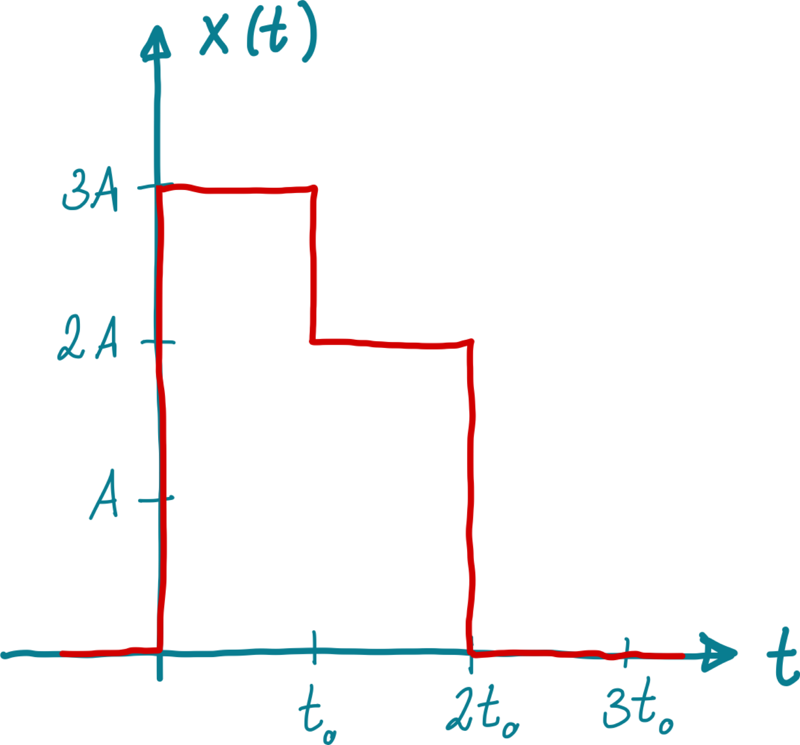22 November - Passiver CR-Hochpass 1. Ordnung
In der Vorlesung wurde das Zeitverhalten der RC-Tiefpass-Schaltung erläutert. In dieser Aufgabe sollen die dort gebrachten Überlegungen auf ein CR-Hochpass-Messglied angewendet werden. Gegeben ist die Schaltung in der Abbildung.
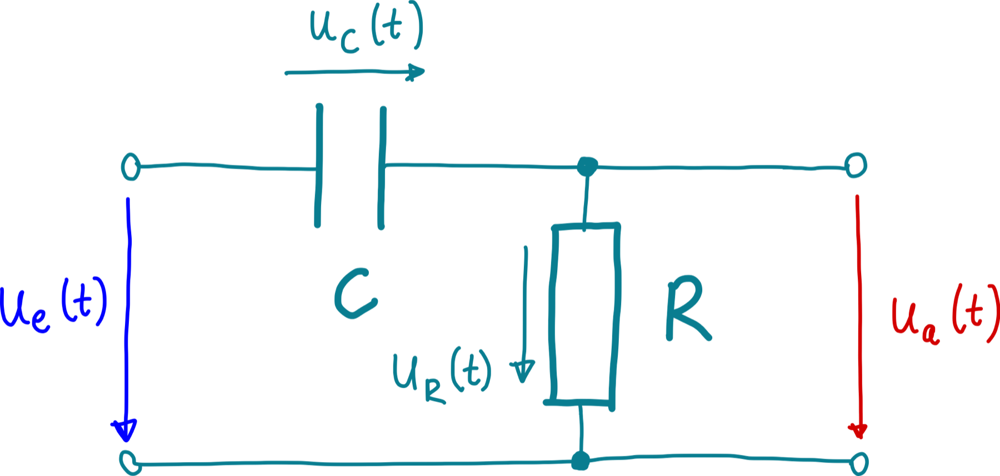22 November - Passiver RC-Tiefpass 1. Ordnung
Ein Messgerät mit einem Verzögerungsverhalten 1. Ordnung, also einem Tiefpassverhalten, und einer 3,dB-Grenzfrequenz von \(f_0 = 1\,\mathrm{MHz}\) wird mit einem periodischem Spannungssignal beaufschlagt.
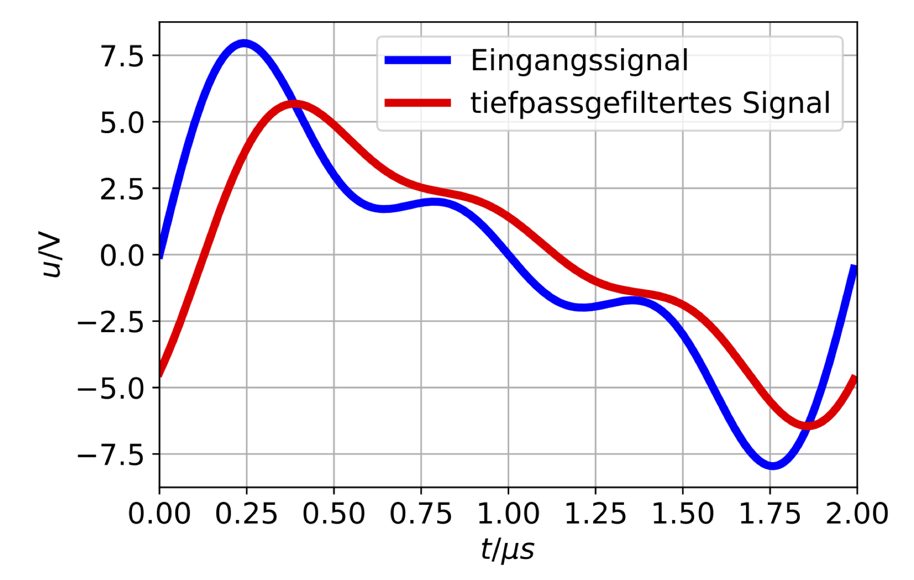22 November - Signal-Rausch-Verhältnis bei einer Tiefpass-Filterung
Die Güte eines Signals wird in der Systemtheorie über ein Signal-Rausch-Verhältnis (Signal-Noise-Ratio SNR) beschrieben. Es ist definiert als das Verhältnis der mittleren Nutzsignalleistung zur mittleren Rauschsignalleistung:
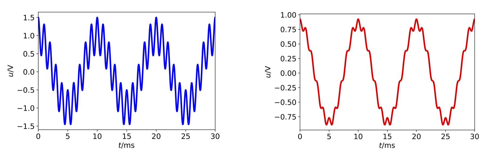23 November - Aussschlag-Messbrücke
Gegeben ist eine Ausschlagmessbrücke bestehend aus den beiden Spannungsteilern \(R_1\) und \(R_2\), bzw. \(R_3\) und \(R_4\).
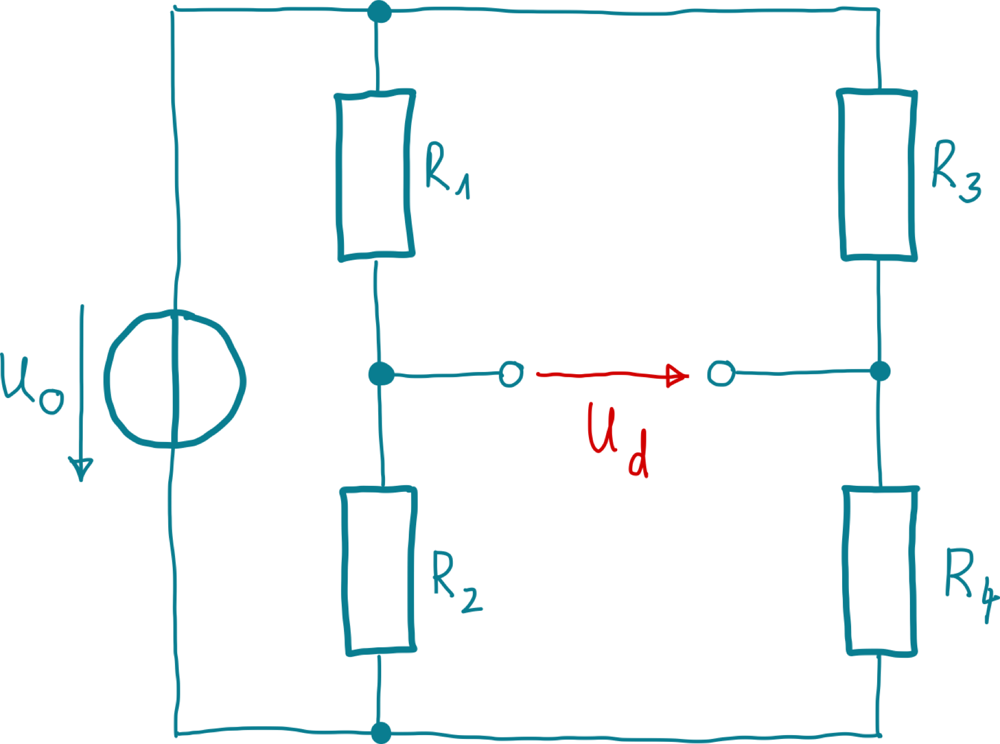23 November - Fourier-Transformation Sägezahn
Gegeben sind die folgenden zwei Zeitfunktionen \(x_1(t)\) und \(x_2(t)\) in der Abbildung.
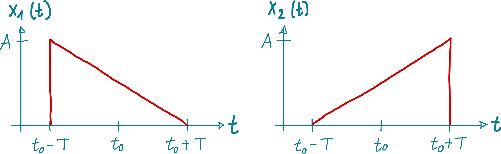23 November - Kapazitive Füllstandsmessung
Bei der kapazitiven Füllstandsmessung nutzt man die Tatsache aus, dass Flüssigkeiten eine relative Dielektrizitätskonstante \(\epsilon_r\) größer als eins besitzen. Als Messgrößenumformer kommt daher ein Kondensator zum Einsatz, der durch die Behälterwand und eine Stabelektrode gebildet wird (siehe Abbildung).
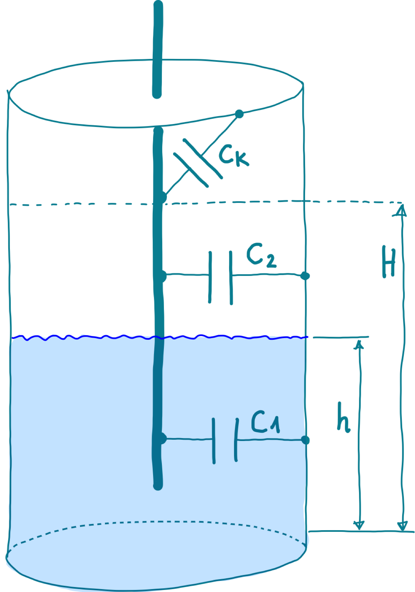23 November - Kapazitiver Sensor für Füllstandsmessung
Ein Plattenkondensator (\(H\): Höhe der Platten, \(B\): Breite der Platten, \(d\): Plattenabstand) wird zur Füllhöhenmessung von Bier (wahlweise „Astra“ oder „Herry“) in einem Brauereibehälter eingesetzt. Der Behälter ist bis zur Höhe \(h\) mit dem jeweiligen Bier gefüllt, der restliche Behälter ist mit Luft gefüllt.
23 November - Kraftmessung mittels Piezoelektrizität
Ein piezoelektrischer Kraftaufnehmer in Form einer Plattenkondensatoranordnung aus Quarz mit der Empfindlichkeit \(k=2{,}3\cdot 10^{-12}\,\mathrm{As/N}\), der Fläche \(A=10\,\mathrm{cm^2}\), der Dicke \(d=1\,\mathrm{mm}\), dem spezifischen Widerstand \(\rho=1014\,\mathrm{\Omega cm}\), der relativen Dielektrizitätszahl \(\varepsilon_r=5\) wird mit einer Kraft \(F=103\,\mathrm N\) belastet (Hinweis: \(\varepsilon_0=8{,}854\cdot 10^{-12}\,\mathrm{As/Vm}\)).
23 November - Leistungsmessung bei Gleichspannung
Wir wollen die rein durch die jeweilige Anschaltung entstehenden Messabweichungen einer Leistungsmessung bei Gleichstrom an einem Beispiel aufzeigen. Hierzu nehmen wir einen handelsüblichen Gleichstrommotor als Verbraucher an, der laut Datenblatt bei Speisung mit \(24\,\mathrm V\) Gleichspannung einen Nennstrom von \(3{,}0\,\mathrm A\) verbraucht.
23 November - Leistungsmessung bei Wechselgrößen
Es stehen zwei Leistungsmesser W1 und W2 zur Verfügung, deren Strompfade mit dem Strom \(i_1 = i_2 = \hat i \sin(\omega t + \varphi)\) beaufschlagt sind. Am Spannungspfad von W1 liegt \(u_1 = \hat u \sin(\omega t)\) und an W2 liegt \(u_2=\hat u \cos(\omega t)\).
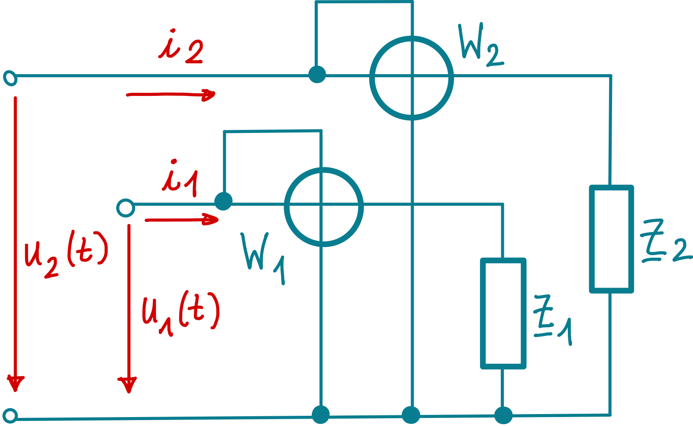23 November - Sprungantwort eines Schwingkreises
Als einfaches Messsystem 2. Ordnung wird ein RLC-Schwingkreis betrachtet. Stellen Sie die Übertragungsfunktion (im Frequenzraum) des RLC-Gliedes durch die Maschengleichung auf. Die Abklingkonstante sei mit \(\delta = \frac{R}{2L}\) definiert und die Eigenkreisfrequenz ist \(\omega_0 = \sqrt{\frac{1}{LC} - \left( \frac{R}{2L} \right)^2}\). Transformieren Sie die Sprungantwort mittels der Laplace-Tabelle im Anhang zurück in den Zeitbereich und skizzieren Sie diese für verschiedene Dämpfungen (schwach gedämpft \(\delta << \omega_0\), gedämpft, aperiodischer Grenzfall \(\omega_0 = 0\)).
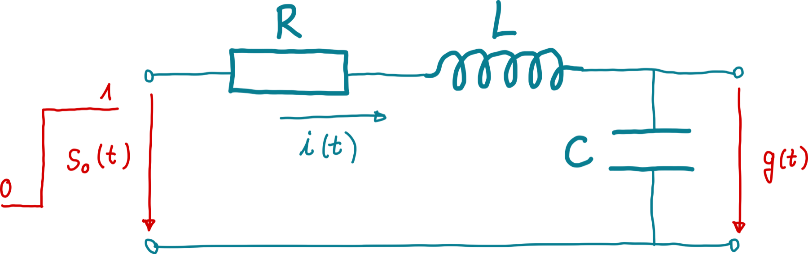23 November - Verstärkerschaltung
Gegeben sei die in der Abbildung dargestellte Verstärkerschaltung mit \(R_1 = 1\,\mathrm{k\Omega}\), \(R_3 = R_1 || R_2\), wobei der Operationsverstärker eine Temperaturempfindlichkeit von \(|U_\mathrm{OS} / \Delta \vartheta | = 2{,}5\mathrm{\mu V / K}\) hat.
{kind=link}